Chapter 7 Advanced topics
7.1 Introduction to R Markdown

Animated GIF for R Markdown
Let’s start learning R Markdown from its cheat sheet. Click the RStudio IDE under Help \(\rightarrow\) Cheatsheets \(\rightarrow\) R Markdown Cheat Sheet. As the cheat sheet explained, the R Markdown (.Rmd) file can combine your code and the output in one file, and produce various formats, such as html, pdf, MS Word, or RTF documents.
Figure 7.1: R Markdown Cheat Sheet
To create a R Markdown file by the following process, firstly, you can open a new .Rmd file at File \(\rightarrow\) New File \(\rightarrow\). In the open window, feel free to change the Title. For example, you can change the Untitled to MyFirstRmd. Then choose the default output format from the three options: HTML, PDF or WORD. Then click “OK”.

Figure 7.2: Create a new RMarkdown file
A new .Rmd file named MyFirstRmd.Rmd is created.
The first part of the file is the YAML (Yet Another Markup Language) header. The YAML header is surrounded by dashes “-”. See the Figure 7.3. It specifies the key arguments for the document, such as title, author, date, and output format. The output format is html in the example. You may see the output: pdf_document, which means that the default format you have chosen is PDF when you created the file.

Figure 7.3: YAML Header
The second part of a .Rmd file is surrounded by three back ticks “`”. They are called chunks of R. Figure 7.4 is an example of a chunk. The “nm_cars” after r in the { } is the name of the chunk.

Figure 7.4: Chunk of R
A chunk is a collection of r code. You can run each chunk by clicking the right arrow on the top-right of the chunk or by pressing the shortcut Ctrl+Shift+Enter. Then R executes the code and displays the outputs inline with the code. The output of chunk in Figure 7.4 is shown below.
## speed dist
## Min. : 4.0 Min. : 2.00
## 1st Qu.:12.0 1st Qu.: 26.00
## Median :15.0 Median : 36.00
## Mean :15.4 Mean : 42.98
## 3rd Qu.:19.0 3rd Qu.: 56.00
## Max. :25.0 Max. :120.00You can find many options for chunks in the R Markdown Cheet Sheet. let’s take a look at some of the chunk options that you’ll use frequently.
1, eval = FALSE stops code from being evaluated. See the chunk below which displays the code only. The code won’t be evaluated and therefore does not have any result in the final document.

2, include = FALSE runs the code, but does not display the code or result in the final document.

3, echo = FALSE hides the code from the final document, and only presents the output obtained from the chunk.

Another chunk below displays only the plot in the final document. The code does not show up in the final document since the echo = FALSE parameter was added to the code chunk.

4, message = FALSE prevents messages from apprearing in the final document.
5, warning = FALSE prevents warnings from showing up in the final document.
6, results = ‘hide’ hides printed output.
7, fig.show = ‘hide’ hides plots.
8, error = TRUE allows the render to continue even if code returns an error.
The third part of a .Rmd file is the text mixed with symbols like # or *.

You can type your text like how you do in MS Word files. The pound symbol # implies a heading. The number of pounders indicate the heading level, it runs from 1 to 6. One # presents the first level header, two #s implies the second level header, and etc. Here is an output of various level headers.

The symbol * arounds a word before and after will give an italic text format. If two *s around a word before and after will bold the word. Such as, *Italic* and **bold** will be Italic and bold in the output file.
The last step is to obtain the output by clicking the Knit button on the top of the .Rmd file. You will be asked to name the file and save it to your PC if it is the first time you knit the file. Do as instructed, then an output file will be opened automatically.
7.2 Tidyverse
Tidyverse is collection of powerful R packages. The packages include ggplot2, dplyr, readr, purr, tidyr, and tibble. They were all written by Hadley Wickham, a true hero in the open-source R world. Following the same design philosophy and grammar, these powerful packages are designed to make R code easier to read. As they are more intuitive, some people argue that beginners should start by learning them, instead of the base R. Now Let’s explain the dplyr package in a little detail for manipulating iris data set.
In dplyr, we use the pipe operator %>% to send data to the next stage. This is similar to the “+” operator we used in ggplot2. To create a new data frame for setosa with sepals longer than 4.0:
Add a new column that contains the ratios of sepal length to sepal width:
Sort by sepal length in ascending order:
The power of dplyr is that we can connect these pipe operators to define a work flow. Suppose we want to see the Iris setosa flowers with the largest ratio of sepal length to sepal width.
iris %>%
filter(Species == "setosa") %>% # filter rows
select(Sepal.Length, Sepal.Width) %>% # select two columns
mutate(ratio = Sepal.Length / Sepal.Width) %>% # add a new column
arrange(desc(ratio)) %>% # sort in descending order
head() # only show top rows. No more pipes, end of sequence.## Sepal.Length Sepal.Width ratio
## 1 4.5 2.3 1.956522
## 2 5.0 3.0 1.666667
## 3 4.9 3.0 1.633333
## 4 4.8 3.0 1.600000
## 5 4.8 3.0 1.600000
## 6 5.4 3.4 1.588235filter( ), mutate( ) and arrange( ) are 3 “verbs” that operate on the data frame sequentially. head( ) is the function that only shows the top rows. Notice the pipe operator %>% at the end of each line. This code is much easier to read by humans, as it defines a sequence of operations.
Two other useful verbs are group_by( ) and summarise( ). They can be used to generate summary statistics. Below, we use group_by to split the data frame into 3 data frames by the species information, compute the mean of sepal lengths and width, and then combine. So it is “split-apply-combine”.
iris %>%
group_by(Species) %>% # split by Species
summarise(avgSL = mean(Sepal.Length), avgSW = mean(Sepal.Width)) %>%
arrange(avgSL)## # A tibble: 3 x 3
## Species avgSL avgSW
## <fct> <dbl> <dbl>
## 1 setosa 5.01 3.43
## 2 versicolor 5.94 2.77
## 3 virginica 6.59 2.97Here we created a new data frame with the mean sepal length and sepal width for each of the 3 species. Obviously, we can change mean( ) to many other functions. This makes it very easy to summarize large data sets.
Note: For all the following exercises, you need to do them by using R Markdown. You should submit your .Rmd file and the final document with pdf format. (You do not submit any answer key for these exercises. )
Exercise 7.1 Fill in the blanks.
1, Read in the heart attack data same as you used in chapter 4.
2, Calculate the average cost per day for patients with different DIAGNOSIS codes.
3, Restrict to females aged older than 20 and younger than 70 who stayed at least one day.
4, Sort the results in descending order.
5, Use one command with multiple steps.
7.3 Interactive plots made easy with Plotly
library(plotly)
g <- ggplot(iris, aes(Petal.Width, Petal.Length , color = Species)) + geom_point()
ggplotly(g)We first generated the plot using ggplot2 and stored it in an object g, which is rendered interactive with Plotly. If you mouse over the plot, the values are highlighted. You can also select an area on the chart to zoom in.
The R community is uniquely supportive. There are lots of free online books, tutorials, example codes, etc. Here are some helpful websites and information.
7.4 Shiny Apps
Recent developments in R made it easy to create interactive charts and even complex websites. Without any web development experience, I created a site entirely in R ( iDEP http://ge-lab.org/idep/ ) to enable biologists to analyze genomic data on their own. My blog (http://gex.netlify.com ) is also created in Rstudio.
7.4.1 Install the Shiny package by typing this in the console.
7.4.2 Create a Shiny web app is a piece of cake

Start a new Shiny app use the shortcut shown above. Or, select File -> New File -> Shiny Web App from the RStudio main menu. Give your app a name, such as test1. Save the app to your local PC. The nice nerds at Rstudio understand the power of an example. A small, but functional app is shown, defined in a file called test1.app.R. Click on Run App on the top-right of the script window, a histogram will pop up. We can custermize the number of bins of the histogram by moving the sliding bar.
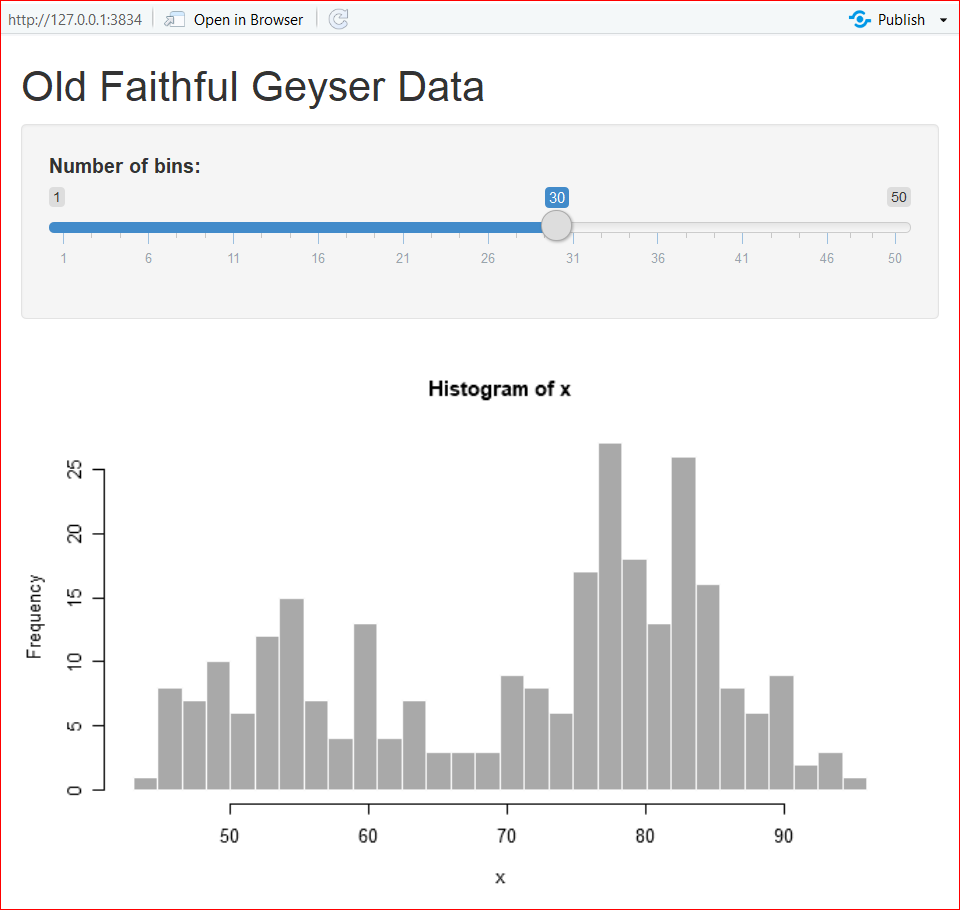
We can further custermize the outputs by editing the code. In the app.R file, there are two functions: ui() and server() . The ui() defines the user interface, and server() specifies the logic.
7.4.3 Let’s play!
- Change the color by changing the col = ‘darkgray’ in line 44 to your favorite color, such as ‘green’, ‘red’, etc. To make it colorful, set it to col = rainbow(10) so we can use ten colors on a rolling basis. See the highlignted code.
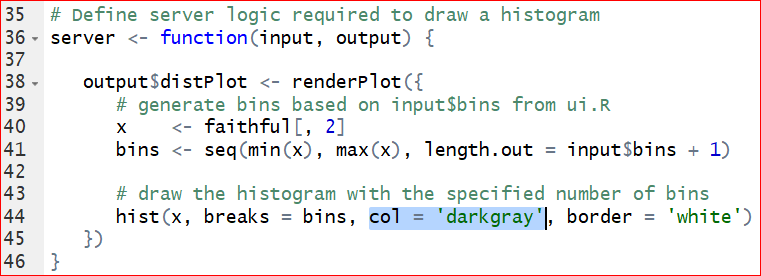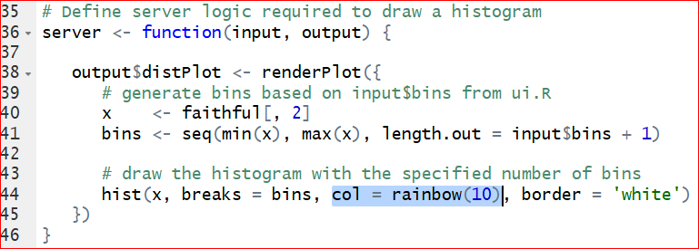
After saving the correction, run the app again.
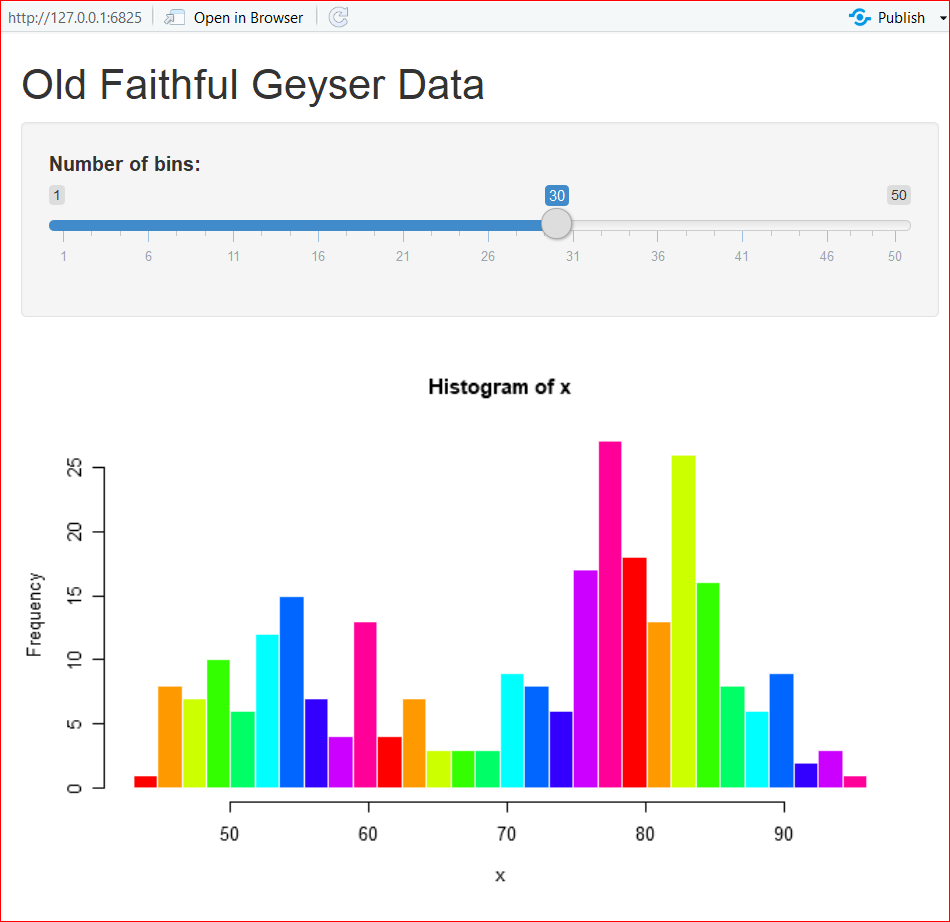
- Switch the data. To replace the original dataset Old Faithful Geyser to a new dataset iris, we need to change the columns and dataset specified on line 40. Meanwhile we need to change the content after titlePanel on line 16 to get a new title. See the hignlighted code in the following graphs.
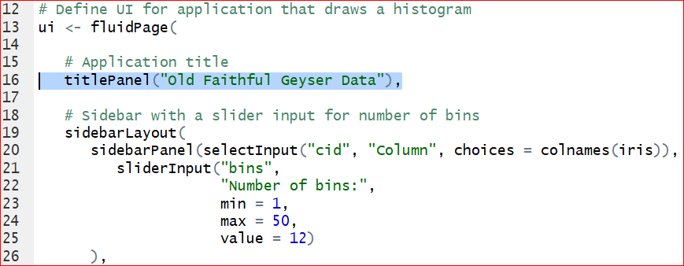 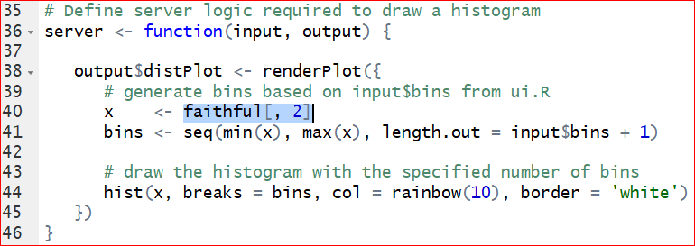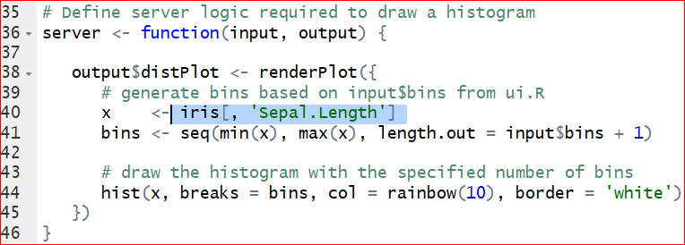
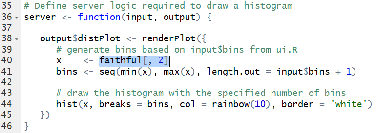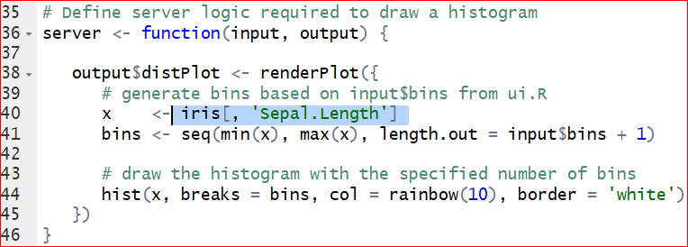
Save the changes and run the app again. Figure 7.5 is the output of histogram of the Sepal length in iris dataset.

Figure 7.5: Output of the Sepal length in the iris.
- The default number of bins of 30, specified at line 25, is probably too big. We can change the defaul value to 12 by setting value = 12.
 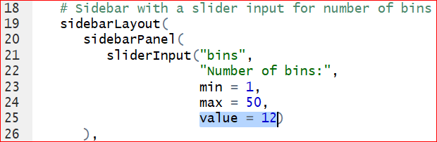
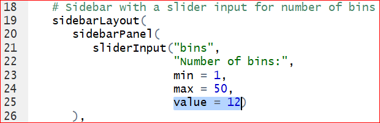
Save the changes and run the app again, we have the histogram with 12 bins by default.
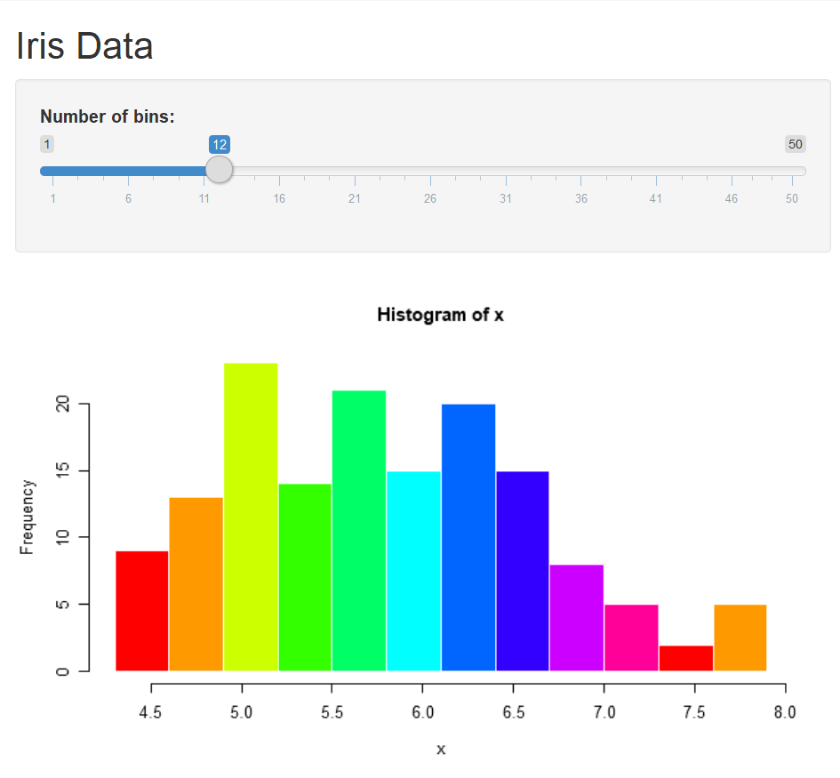
- We can change ‘Sepal.Length’ to other columns by assigning x to other variables. Would it be cool if the user can choose the variable from the output? To make it, we need to add a control widget by inserting this line of code after line 20: “selectInput(”cid“,”Column“, choices = colnames(iris)),”. Do not forget the comma at the very end!
 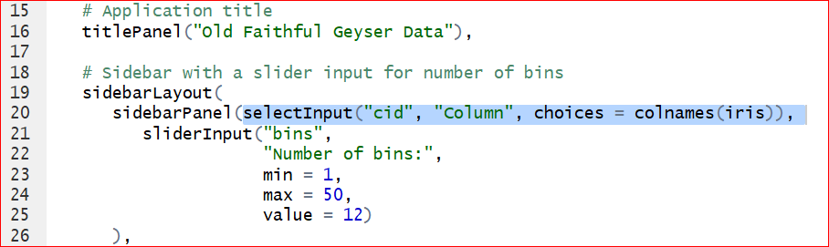
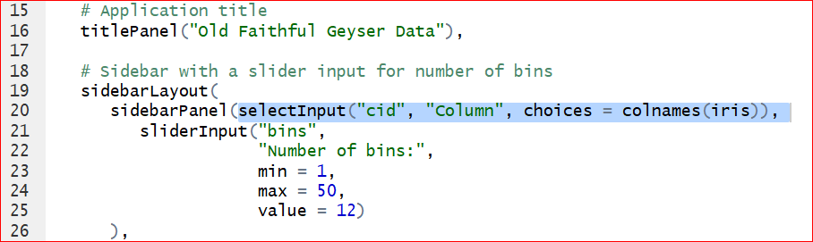
Save and run the app. A control widget Column presents above the Number of bins. We are able to select any of the variable in iris dataset.

As you may have noticed that, the columns can be selected from the control widget Column, but the histogram does not change correspondingly. This is because that we have not changed the code with respect to the histogram. Take a look at the server function, on line 44, the histogram function is given as hist(x,…) where x <- iris[, ‘Sepal.Length’] sepecified on line 40. That is why the histogram produces only the histogram of Sepal length. To let the histogram change according to the selection of columns, we replace x <- iris[, ‘Sepal.Length’] by x <- iris[, input$cid ] on the line 40. Note that the input$cid is consistant with the inserted code selectInput( “cid”,\(\cdots\)) on line 20: “sidebarPanel(selectInput("cid", "Column", choices = colnames(iris)),”.
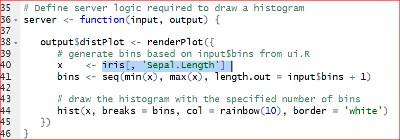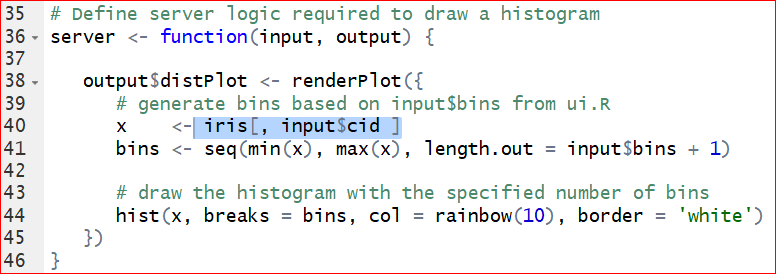
Save and run the code. Select a variable from the Column, say Petal.Width, then the histogram of Petal width shows up correctly.
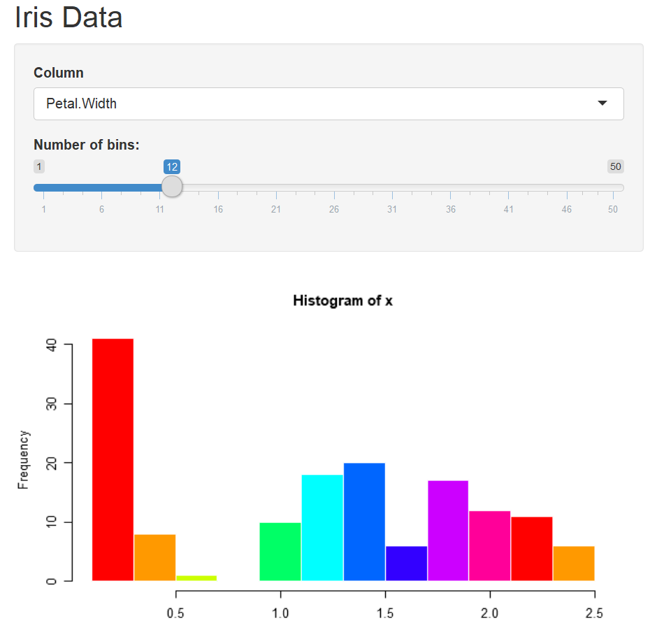
To change the title, let’s define a main title as titl <- , then assign it to the option “main =___” in the hist() function. Your output should look like the Figure 7.6
titl <- paste("Histogram of", **input$cid**, sep = " ")
hist(x, breaks = bins, col = 'green', border = 'white', main = _______)
Figure 7.6: Output of Exercise 7.4.
- We can build a more complex app by adding an approximation normal distribution line by replace the function hist(x, breaks = bins, col = ‘green’, border = ‘white’) by the code below:
h <- hist(x, breaks = bins, col = rainbow(10), border = 'white')
yfit <- dnorm(bins, mean = mean(x), sd = sd(x))
yfit <- yfit * diff( h$mids[1:2]) * length(x)
lines(bins, yfit, col = "blue")The output should be similar to Figure 7.7.
Figure 7.7: Output of adding an approximation normal distribution curve.
Steps: 1, Change the selectInput() line as its original with all columns selected.
2, Separate the variables into two groups, numeric variables (columns 1 throught 4) for histogram and categorical variables (5th column) for pie plot.
3, Use if() and }else{ for each group.
Your output of the pie chart should be similar to Figure 7.8.
Figure 7.8: Pie chart output of Exercise 7.5.
library(shiny)
# Define UI for application that draws a histogram
ui <- fluidPage(
# Application title
titlePanel("Interactive page for iris data"),
# Sidebar with a slider input for number of bins
sidebarLayout(
sidebarPanel(
selectInput("cid", "Select the column", choices = ___________),
sliderInput("bins",
"Number of bins:",
min = 1,
max = 50,
value = 12)
),
# Show a plot of the generated distribution
mainPanel(
plotOutput("Plot")
)
)
)
# Define server logic required to draw a histogram and pie plot
server <- function(input, output) {
output$Plot <- renderPlot({
x <- iris[, input$cid]
# draw the histogram with the specified number of bins for variable columns
________ (input$cid %in% colnames(iris)[______]){
bins <- seq(min(x), max(x), length.out = input$bins + 1)
titl <- paste("Histogram of", input$cid, sep = " ")
hist(x, breaks = bins, col = 'green', border = 'white', main = titl)
# draw the pie plot for catogorical column Species
__________
count <- table(x)
labl <- paste(names(count), "\n", count, sep = "")
titl <- paste("Pie plot of", input$cid, sep = " ")
pie(count, labels = labl, main = titl)
}
})
}## Warning: package 'shiny' was built under R version 3.6.37.4.4 Pubish your app
You can publish your app online by clicking on the Publish button at the top right of the app window and following the instructions. If this is the first time you publish a shiny app, here are the steps.
Step 1: Click on “Publish” button in at the top-right of the window. Then click on “ShinyApps.io” in the Connect Account window as shown in the Figure 7.9.
Figure 7.9: : Connect Account.
Step 2: Click “your account on ShinyApps” in the Connect ShinyApps.io Account window as shown in Figure 7.10.

Figure 7.10: Connect ShinyApps.io Account
Step 3: Click “Sign Up” in the new Shinyapps.io by RStudio window.

Figure 7.11: Sign up
Step 4: Type your email, password and confirm password in the window as shown in 7.12, then click “Sign Up”.
Figure 7.12: Registration
Step 5: In the Account Setup window Figure 7.13, type an account name that you would like to use, then click on “Save”. Everyone will have a unique accout name. For example, if you type “MyFirstShiny”, then the border of the box turn to red which a reminder that the name is occupied. You need to pick up another name. I picked up my account name “stat415or515”.

Figure 7.13: Account Setup
Step 6: A new window will show up and show you how to finish the next steps. Firstly, install the package rsconnect. Then click the “Copy to clipboard” button in Figure 7.14, and paste it into your console to authorize your account. Finally, replace the path in Figure 7.15 with the path where your Shiny app is saved. Note, the slash is forward not backward in the path. For example, I have a Shiny app named IrisData.R which is saved at ‘C:/Users/Documents/FirstShiny/’, then I run the following code to publish my app.

Figure 7.14: Authorization
Figure 7.15: Change the path to your app
Step 7: You can find the link at the bottom of Figure 7.16. The link for my iris data is https://stat415or515.shinyapps.io/IrisData/.
Figure 7.16: Generating the link
Show it off by sending the URL of your data to your friends or your adviser. More instructions can be found in these excellent tutorials: https://docs.rstudio.com/shinyapps.io/getting-started.html, and https://shiny.rstudio.com/tutorial/written-tutorial/lesson1/.
Solutions to these exercises can be found at GitHub https://github.com/gexijin/teach/blob/master/app.R
7.5 Define your own function
We can also easily define our own functions. For example, we have the following arithmetic function:
\[f(x)=1.5 x^3+ x^2-2x+1\]
Obviously, we can use the following code to do the computing:
## [1] 212.6813This will work, but every time we have to re-write this code. Let’s define our own function without repeating same code everytime:
myf <- function(x) { #Name of my function is myf
y = 1.57345 * x^3 + x^2 - 2 * x + 1 #Expression of the function
return(y) #Return vaules of the function
}Note that “{” and “}” signify the beginning and end of a block of code. “function” tells R that a function is going to be defined. At the end, the “return” statement returns the desired values.
You can copy and paste the 4 lines of code to R and it defines a function called myf, which you can call the function by:
## [1] 212.6813or
## [1] 212.6813The funtion applies to a vector as well. For example:
x <- - 10 : 10 # x is a vector with integer values from -10 to 10.
myf(x) # Apply the function myf() to x.## [1] -1452.45000 -1047.04505 -724.60640 -475.69335 -290.86520 -160.68125
## [7] -75.70080 -26.48315 -3.58760 2.42655 1.00000 1.57345
## [13] 13.58760 46.48315 109.70080 212.68125 364.86520 575.69335
## [19] 854.60640 1211.04505 1654.45000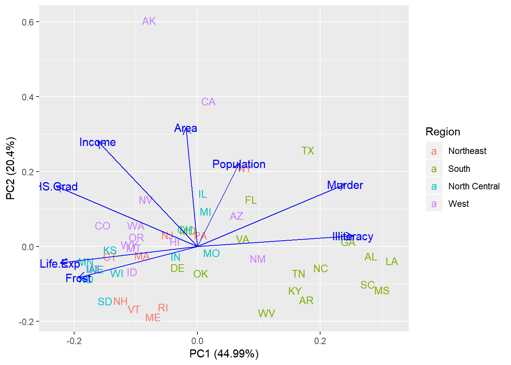
Functions can handle many different calculations beyond arithmetic functions. It can take in one or more inputs and return a list of complex data objects too.
Exercise 7.5 Suppose f(x)= |x|+5x-6, where |x| means the absolute value of x.
a. Write an R function to implement this arithmetic function.
b. Use this function to find f(-4.534).
c. Obtain the graph of the function.
Let’s define a function to count even numbers in a vector.
#counts the number of even intergers in vec
evencount <- function(vec) {
k <- 0 # assign 0 to a count varialbe k
for (i in vec) { # Find all elements (represented by i) in vec.
# Values of i are actually vec[1],vec[2],...
if (i %% 2 == 0)
k <- k + 1 # test if i is an even or odd number.
# %% is the modulo operator.
}
return(k) #Return the count of even numbers in vec.
}x=c(2, 5, 7, 8, 14, 12, 8, 3) # Define a new vector.
evencount(x) # Call the function evencount(). Replace vec with defined vector x.## [1] 5A vaiable is called local variable if it is only visible within a function. Such as k and vec are local variables to the function evencount(). They disappear after the function returns.
k
Error: object ‘vec’ not found
vec
Error: object ‘vec’ not found
A variable is called global variable if it is defined outside of functions. A global variable is also available within functions. Here is an example:
myfun.globle <- function (x){
y <- 1
return(x - 2 * y)
}
myfun.globle(8) # set x=8, and do the calculation: 8-2*y = 8-2*(1)=6## [1] 6Here y is a global variable.
The function myfun.globle2() defined below returns the same values as above. But both x and y within the the paratheses (x, y=1) following function are local variables.
myfun.globle2 <- function (x, y = 1){ #y is set as 1 within the function by default.
return(x - 2 * y)
}
myfun.globle2(8) #8-2*y = 8-2*(1)=6## [1] 6Exercise 7.6 Define a function which returns the count of all odd numbers in the vector x <- 1:99.
Exercise 7.7 Define a function counting the values that are less than 0 for two vectors x=rnorm(50) and y=rnorm(5000) respectively. Define another function to calculate the proportion that values are less than 0 for x and y respectively. Compare calculated proportions with theoretical proportion 0.5, what conclusions can you make?